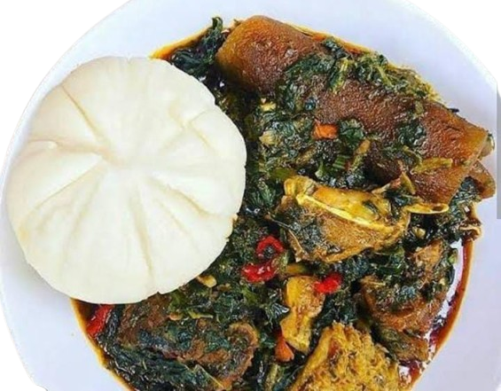

Discover the Rich Flavors of Nigeria.
Efo-Riro Recipe:
Efo Riro is a delicious, rich spinach stew from Nigeria, particularly popular among the Yoruba people. It is made with leafy greens, assorted meats, and a flavorful pepper sauce.

Efo-riro with pounded yam
Ingredients
- The proteins:
- 500g assorted meats (beef, tripe, cow skin, or chicken)
- 2 smoked fish (e.g., mackerel or catfish), deboned
- 1 cup dried prawns or shrimp (optional)
- The Pepper sauce and Stew base:
- 3 large red bell peppers (tatashe)
- 2 medium tomatoes
- 2 scotch bonnet peppers (atarodo) (adjust to taste)
- 1 medium onion (for blending)
- ½ cup palm oil
- 1 medium onion (chopped)
- 2 tablespoons ground crayfish (optional, but adds great flavor)
- 2 tablespoons locust beans (iru)
- 2 cups meat stock (from boiled beef, chicken, or assorted meat)
- For the Greens:
- 500g fresh spinach (or substitute with ugu or kale)
- 1 teaspoon salt (to taste)
- 1 seasoning cube (Maggi or Knorr)
- 1 teaspoon ground pepper (optional)
The coking steps:
Click to watch a detailed video here
- Blend the bell peppers, tomatoes, scotch bonnets, and one onion into a smooth paste.
- Wash and chop the spinach, then set aside.
- Boil the assorted meats with salt, seasoning cube, and onion until tender. Reserve the stock.
- Rinse the smoked fish and set aside.
- Heat the palm oil in a pot over medium heat
- Add the chopped onions and sauté until translucent.
- Add the locust beans (iru) and stir for a minute.
- Pour in the blended pepper mix and cook for 10-15 minutes, stirring occasionally, until the oil begins to float on top.
- Step 3: Add Meat and Seasonings
- Add the cooked meats, smoked fish, and dried prawns.
- Pour in the reserved meat stock, add crayfish, and let it simmer for 5 minutes.
- Season with salt, seasoning cube, and extra ground pepper if needed.
- Stir in the chopped spinach and allow it to cook for 3-5 minutes. The greens should be soft but still vibrant.
- Remove from heat and serve hot with rice, pounded yam, eba, fufu, or amala.